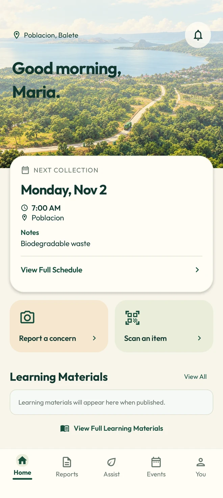

01 — PREPARE
Know what’s next.
Find your barangay’s posted collection schedule. Check the notes, prepare your waste, and make collection day a little easier.
Know your collectionA little care can take us a long way.
For the streets we walk.
The lake we love. The place we call home.

Your barangay’s posted dates, collection notes, and little reminders to prepare ahead.
See posted dates, collection notes, and schedules for your barangay.
Actual app screens · Illustrative preview data
A place this beautiful deserves a little care. From our everyday streets to the shores of Taal Lake, it starts with the choices we make together.
TrashTrack brings collection schedules, waste guidance, community updates and reporting into one app. Simple ways to look after the place we call home.
Meet TrashTrackA cleaner community starts close to home.
Here’s where a little care can take you.
Find your barangay’s posted collection schedule. Check the notes, prepare your waste, and make collection day a little easier.
Know your collectionA bottle, a peel, a little uncertainty. Scan an item or ask TrashTrack Assist for a little guidance on what to do next.
Try the waste guideSpot a waste concern? Share the details and follow updates in the app. Small observations can be the start of positive change.
Explore community reportingA little practice makes everyday sorting feel easier. Choose an item, then decide where you think it belongs.
A simple learning example. Always follow your barangay’s collection and segregation guidance.
Take a little care for Balete wherever you go.
A few answers before you get started.
TrashTrack is designed for residents of Balete, Batangas. The app brings together barangay collection schedules, waste guidance, reporting and community events.
Download the preview APK and open it on an Android 7.0 or newer device. Your phone may ask you to allow installation from your browser. This is a preview build distributed directly, rather than a Play Store release.
The website shows actual app screens with illustrative preview data. Open the app and check your barangay’s posted schedule for current collection information.
The download on this website is an Android APK. There is no iPhone download offered here.